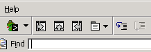
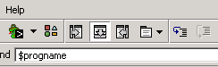
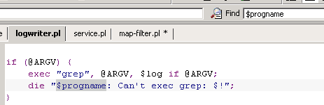
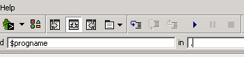
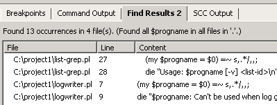

'Alt'+'I' ('Ctrl'+'I' on Mac OS X) positions the cursor in
the Find field.

Enter the search string.

'Enter' searches for the string in the current file.

'Tab' positions the cursor in the Find In
field. Enter a period to search the directory of the current
file.

'Enter' displays all matches in the directory of the current
file.